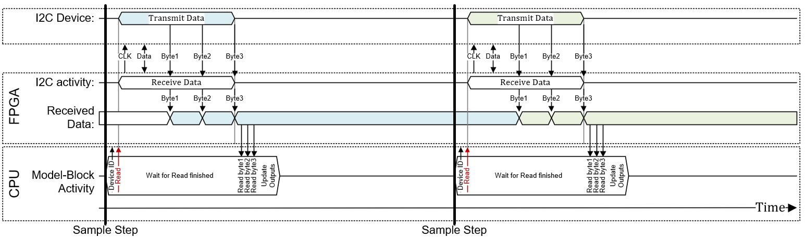
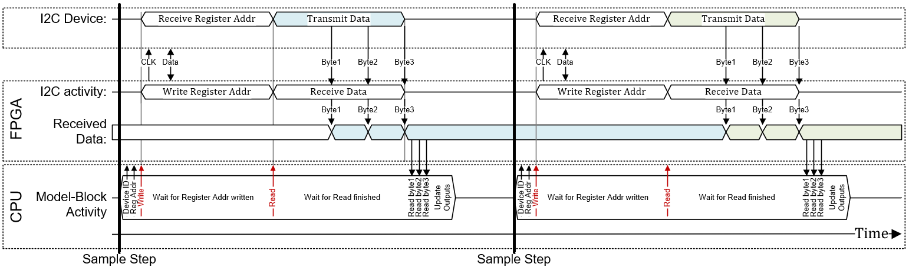
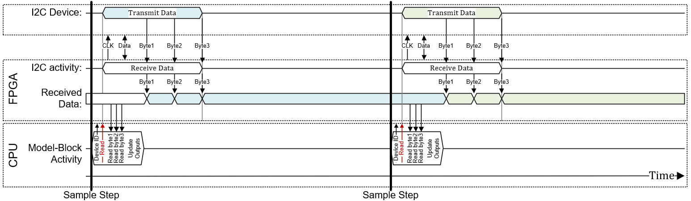
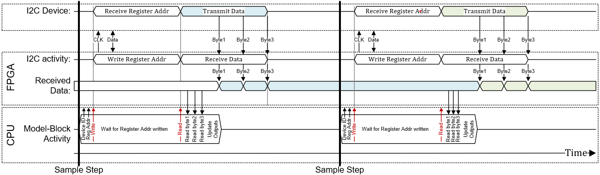

I2C Usage Notes — Usage information about the I/O module
Speedgoat provides two I2C master and two I2C slave code modules for the configurable I/O modules. This chapter explains, how to use them
Master Read v1 - The I2C Master read driver block allows data to be read from a slave device supporting the I2C slave protocol.
Master Write v1 - The I2C Master write driver block allows data to be written to a device supporting the I2C slave protocol.
Slave setup v1 - The I2C Slave setup block allows an identifier (slaveID) to be assigned to the I2CS blocks
Slave read v1 - The I2C Slave read driver block allows the register bank of the code module to be read
Slave write v1 - The I2C Slave write driver block allows data to be written to any register in the register bank of the code module
The image below illustrates the basic timing interaction between the CPU, the FPGA and the I2C slave device without subindex and present model step data (Enable Subindex Configuration is OFF / Read Value from Previous Model Step is OFF).

The driver sets the Device ID and then starts the I2C read transfer. The driver actively waits until this I2C read transfer is finished and updates the model-block Data output with the I2C data that just have been transferred.
The image below illustrates the basic timing interaction between the CPU, the FPGA and the I2C slave device with subindex and present model step data (Enable Subindex Configuration is ON / Read Value from Previous Model Step is OFF).

The driver sets the Device ID and the subindex (Reg Addr) and then first starts a I2C write transfer. This transfer writes the register address to read from to the I2C device. At the end of this write transfer (active wait), the driver immediately starts an I2C read transfer where data from the I2C - with the first read address just written before - are received by the code module. The driver actively waits until this I2C read transfer is finished and updates the model-block Data output with I2C data that just have been transferred.
The image below illustrates the basic timing interaction between the CPU, the FPGA and the I2C slave device without subindex and previous model step data (Enable Subindex Configuration is OFF / Read Value from Previous Model Step is ON).

The driver sets the Device ID and then starts the I2C read transfer. The driver does not actively wait for this I2C read transfer and therefore updates the model-block Data output with the I2C data from the previous step. This reduces the TET.
The image below illustrates the basic timing interaction between the CPU, the FPGA and the I2C slave device with subindex and previous model step data (Enable Subindex Configuration is ON / Read Value from Previous Model Step is ON).

The driver sets the Device ID and the subindex (Reg Addr) and then first starts a I2C write transfer. This transfer writes the register address to read from to the I2C device. At the end of this write transfer (active wait), the driver immediately starts an I2C read transfer where data from the I2C - with the first read address just written before - are received by the code module. The driver does not actively wait for this I2C read transfer and therefore updates the model-block Data output with the I2C data from the previous step. This reduces the TET.